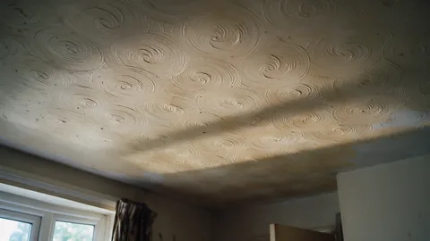
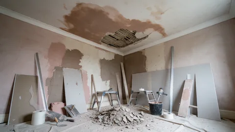

Generated photo
Generated photoGenerated for this demo. Not a photograph of a real job.
This is the question we get asked most, usually by somebody who has a decorator booked for Saturday. The short answer is five to seven days for a skim coat and two to three weeks for anything thick. The useful answer is that the calendar is not what decides it, and there is a way to tell by looking.
What is actually happening
Gypsum plaster sets chemically within a couple of hours. That is not drying. Setting is the plaster going hard. Drying is all the extra water that was in the mix leaving the wall, and that happens slowly, from the surface inwards, and it keeps going long after the wall feels firm to the hand.
Two things decide how long it takes. How thick the plaster is, and how easily the water can get away. A two to three millimetre skim over sound plaster has very little water in it and dries quickly. An eleven millimetre undercoat on bare brick plus a finish coat on top has a lot, and in a cold room in February it can genuinely be three weeks.
Read the colour, not the diary
Fresh plaster goes on a dark reddish brown pink. As it dries it goes patchy: pale where the water has gone, dark where it has not. Then it evens out to one light pale pink all over. That even pale colour is the signal.
The places that stay dark longest are the ones people forget to look at. Internal corners. Behind a radiator. The top of a wall where it meets the ceiling. Under a window board. If any of those are still dark while the middle of the wall is pale, the wall is not dry. Paint it then, and the moisture still coming out has nowhere to go except through your new paint.
Helping it along, and what not to do
What helps is gentle air movement and a normal room temperature. Windows on the latch or trickle vents open, interior doors ajar, and the heating on as it normally would be. That is it.
What does not help is heat aimed at one spot. A fan heater pointed at a wall, a radiator turned up to full right underneath it, or a dehumidifier sat in front of it all dry the surface much faster than the inside. The surface shrinks while what is behind it has not finished, and that is how you get crazing and hairline cracks on an otherwise perfect wall. Slow and even beats fast every time.
The mist coat, which is not optional
New plaster is thirsty and slightly dusty. Put full strength emulsion on it and the plaster sucks the water out of the paint faster than the paint can form a film, so it sits on the surface without bonding. It can look fine for months and then come off in sheets, often when you try to peel a bit of masking tape off.
The mist coat is ordinary matt emulsion, not vinyl silk and nothing fancy, watered down by roughly a quarter to a third. It soaks in, seals the surface and gives the proper coats something to hold on to. It will look thin and patchy, and that is what it is supposed to look like. Then two normal coats over it and the wall is done.
Vinyl silk and most of the washable finishes are the wrong thing as a first coat, because they are designed not to let anything through, and a new wall still wants to breathe a little. Save them for later if you want them at all.
Wallpaper, and tiles
Wallpaper wants the plaster properly dry, longer than paint does, and it wants the wall sized first so the paper can be slid about and does not grab. Hanging paper on new plaster that is not dry is how you get it lifting at the seams a month later.
Tiles are a different question again. Most tile adhesives want a sound surface rather than a polished skim, and a highly polished finish coat is not the ideal background for them. If a wall is going to be tiled, say so before it is plastered and it can be left with a float finish instead, which is better for the tiler and cheaper for you.
The quick version
Skim on a sound wall: five to seven days. Fully replastered wall or a bonded ceiling: two to three weeks. Judge by one even pale pink colour everywhere including the corners. Gentle air, normal heat, nothing blasting at it. Then a watered down matt mist coat first, then two proper coats. If a plasterer tells you to crack on with the paint the day after, that is the bit to be suspicious of.
Written for this demo from general trade knowledge. It is not advice on your property, and anything structural, anything wet or anything that might be an older textured coating wants somebody looking at the actual house.
More advice
While you are here.

Generated photoArtex: skim over or remove?
Two honest options, one thing that must be tested before anybody touches it, and the job nobody should do on a guess.

Generated photoWhat a sagging ceiling is telling you
A bulge, a brown ring or a line of nails showing through. What each one means and which of them will not wait.
Want somebody to look at the actual walls?
Tell us which rooms and your postcode. Twenty minutes with a knuckle and a straight edge beats any article.